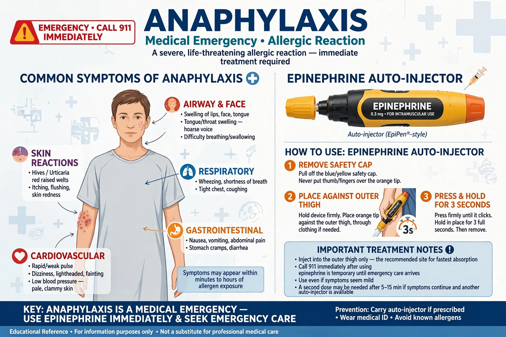

Anaphylaxis is a serious, potentially fatal allergic reaction that is rapid in onset. It typically causes itchy rash, swelling of the tongue or throat, shortness of breath, vomiting, lightheadedness and low blood pressure, and can progress to anaphylactic shock.

AnaphylaxisMost anaphylaxis is mediated by immunoglobulin E triggering mast cell and basophil release of histamine and other mediators, causing vasodilation, increased vascular permeability and bronchoconstriction. Some triggers act through non-IgE pathways.
Common triggers are peanuts, tree nuts, fish, shellfish, milk, insect stings, antibiotics and latex. Additives such as sulfites occasionally cause reactions. Diagnosis is clinical, based on rapid involvement of skin, airway, breathing or circulation after exposure.
Intramuscular epinephrine is the first-line treatment, repeated as needed, with the person positioned appropriately and emergency services called. Antihistamines and glucocorticoids are adjuncts only. People at risk carry epinephrine auto-injectors.